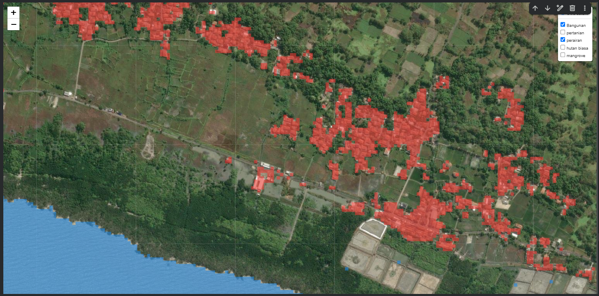
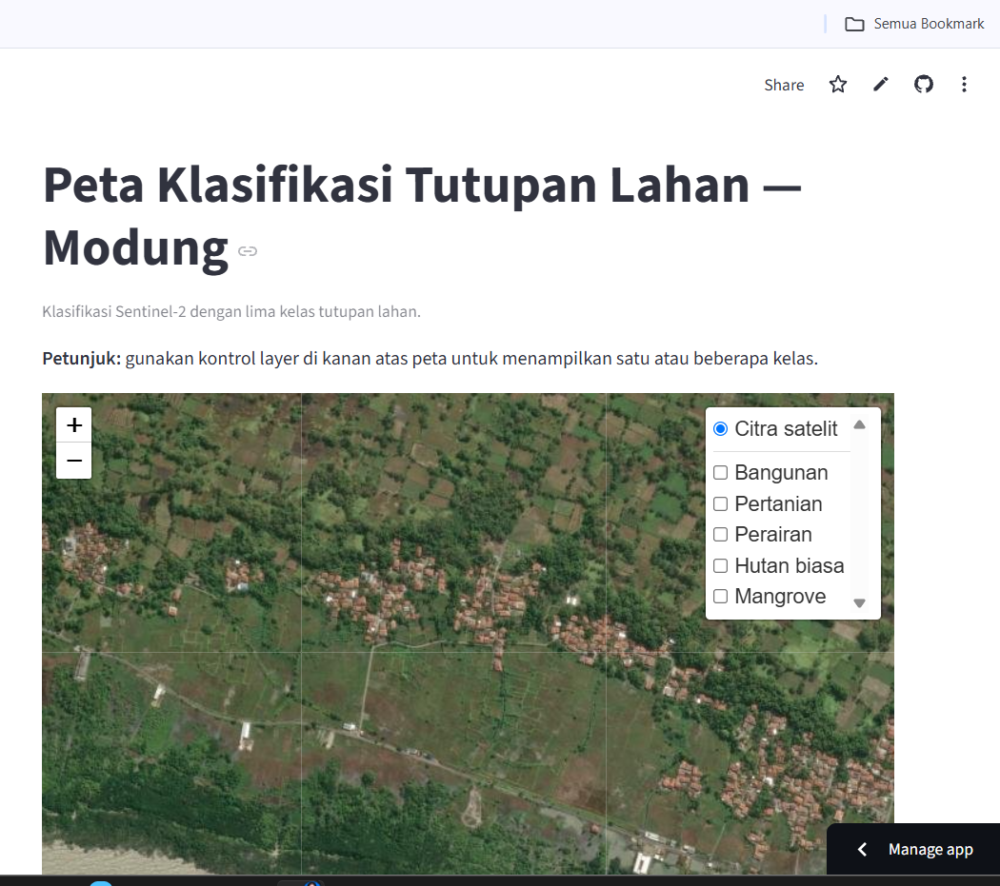

Pemetaan dan Klasifikasi salah satu daerah Tutupan Lahan di Jawa Timur Menggunakan Citra Satelit Sentinel-2 dan Random Forest (Modung, Bangkalan)#
Latar Belakang#
Informasi tutupan lahan diperlukan untuk memahami persebaran kawasan terbangun, pertanian, perairan, hutan, dan hutan mangrove. Citra satelit dapat dimanfaatkan untuk mengekstraksi informasi spektral dan membangun model klasifikasi tutupan lahan secara otomatis.
1. Tujuan#
Mengklasifikasikan tutupan lahan dari citra Sentinel-2 menggunakan Random Forest, lalu menampilkannya sebagai peta web interaktif dengan lima layer yang dapat dinyalakan dan dimatikan secara terpisah:
Bangunan
Pertanian
Perairan
Hutan biasa
Mangrove
2. Data yang digunakan#
Citra Sentinel-2
Produk: Sentinel-2 L2A
Tanggal citra: 18 September 2026
Band yang digunakan sebagai fitur: B02, B03, B04, B08, B8A, B11, B12
Komposit tambahan yang tersedia: True_color dan SWIR
Ukuran raster yang tercatat: 355 kolom × 255 baris
CRS: EPSG:4326
Extent raster: bujur 112.917060–112.948934 dan lintang -7.199337–-7.176635
import rasterio
for nama_band, path in band_paths.items():
with rasterio.open(path) as src:
print(f"Band: {nama_band}")
print(f"CRS: {src.crs}")
print(f"Ukuran: {src.width} x {src.height}")
print(f"Jumlah band: {src.count}")
print(f"Resolusi: {src.res}")
print(f"Bounds: {src.bounds}")
print("-" * 40)
Band: B02
CRS: EPSG:4326
Ukuran: 355 x 255
Jumlah band: 1
Resolusi: (8.978591549292323e-05, 8.902745098039128e-05)
Bounds: BoundingBox(left=112.91706, bottom=-7.199337, right=112.948934, top=-7.176635)
----------------------------------------
Band: B03
CRS: EPSG:4326
Ukuran: 355 x 255
Jumlah band: 1
Resolusi: (8.978591549292323e-05, 8.902745098039128e-05)
Bounds: BoundingBox(left=112.91706, bottom=-7.199337, right=112.948934, top=-7.176635)
----------------------------------------
Band: B04
CRS: EPSG:4326
Ukuran: 355 x 255
Jumlah band: 1
Resolusi: (8.978591549292323e-05, 8.902745098039128e-05)
Bounds: BoundingBox(left=112.91706, bottom=-7.199337, right=112.948934, top=-7.176635)
----------------------------------------
Band: B08
CRS: EPSG:4326
Ukuran: 355 x 255
Jumlah band: 1
Resolusi: (8.978591549292323e-05, 8.902745098039128e-05)
Bounds: BoundingBox(left=112.91706, bottom=-7.199337, right=112.948934, top=-7.176635)
----------------------------------------
Band: B8A
CRS: EPSG:4326
Ukuran: 355 x 255
Jumlah band: 1
Resolusi: (8.978591549292323e-05, 8.902745098039128e-05)
Bounds: BoundingBox(left=112.91706, bottom=-7.199337, right=112.948934, top=-7.176635)
----------------------------------------
Band: B11
CRS: EPSG:4326
Ukuran: 355 x 255
Jumlah band: 1
Resolusi: (8.978591549292323e-05, 8.902745098039128e-05)
Bounds: BoundingBox(left=112.91706, bottom=-7.199337, right=112.948934, top=-7.176635)
----------------------------------------
Band: B12
CRS: EPSG:4326
Ukuran: 355 x 255
Jumlah band: 1
Resolusi: (8.978591549292323e-05, 8.902745098039128e-05)
Bounds: BoundingBox(left=112.91706, bottom=-7.199337, right=112.948934, top=-7.176635)
----------------------------------------
Sampel poligon#
GeoJSON: modungSIAPP!!.geojson
GeoJSON dibaca secara manual menggunakan json.load dan shapely.geometry.shape karena pembacaan awal melalui GeoPandas mengalami kendala GDAL. GeoDataFrame kemudian diberi CRS EPSG:4326. Geometri tidak valid diperbaiki menggunakan make_valid.
Distribusi fitur awal:
Kelas |
Jumlah poligon awal |
|---|---|
Bangunan |
105 |
Pertanian |
45 |
Perairan |
1 |
Hutan biasa |
12 |
Mangrove |
6 |
Total |
169 |
Penanganan poligon batas#
Poligon indeks 0 sangat besar (sekitar 5.817.291,7 m²) dan menutupi sekitar 5.425.443,3 m² poligon lain. Pemeriksaan visual menunjukkan bahwa poligon tersebut berperan sebagai batas wilayah, bukan sampel Bangunan. Karena itu, poligon ini dikeluarkan dari salinan data pelatihan, sementara geometri aslinya tetap dipakai sebagai batas wilayah kajian.
Jumlah poligon sampel setelah pengecualian:
Kelas |
Jumlah poligon |
|---|---|
Bangunan |
104 |
Pertanian |
45 |
Perairan |
1 |
Hutan biasa |
12 |
Mangrove |
6 |
Total |
168 |
3. Lingkungan kerja#
Google Colab: pengolahan data, rasterisasi sampel, pelatihan dan prediksi.
Python dan pustaka geospasial/pembelajaran mesin, termasuk GeoPandas, Shapely, Rasterio, NumPy, scikit-learn, dan Folium.
Folium/Leaflet: peta web interaktif.
GitHub: penyimpanan kode dan berkas aplikasi.
Streamlit Community Cloud: penerbitan aplikasi.
Versi Python dan versi pustaka tidak tercatat di ringkasan proses; lengkapi dari notebook bila diperlukan.
Membaca GeoJSON secara manual:
import json
import geopandas as gpd
from shapely.geometry import shape
with open("/content/modungSIAPP!!.geojson", encoding="utf-8") as f:
data = json.load(f)
gdf_bersih = gpd.GeoDataFrame(
[
{
**ft.get("properties", {}),
"geometry": shape(ft["geometry"])
}
for ft in data["features"]
],
geometry="geometry",
crs="EPSG:4326"
)
# Indeks 0 adalah poligon Bangunan yang mencakup area sangat luas.
# Keluarkan hanya dari salinan data latih.
gdf_bersih = gdf_bersih.drop(index=0).reset_index(drop=True)
print("Jumlah poligon tersisa:", len(gdf_bersih))
print("\nJumlah poligon per kelas:")
print(gdf_bersih["lahan"].value_counts().to_string())
Jumlah poligon tersisa: 168
Jumlah poligon per kelas:
lahan
Bangunan 104
pertanian 45
hutan biasa 12
mangrove 6
perairan 1
4. Penyusunan fitur dan label#
Tujuh band B02, B03, B04, B08, B8A, B11, dan B12 digunakan sebagai fitur masukan. Poligon sampel dirasterisasi ke grid raster untuk membentuk label kelas. Jumlah piksel sampel yang tercatat pada tahap pelatihan:
Kelas |
Jumlah piksel sampel |
|---|---|
Bangunan |
2.103 |
Pertanian |
23.490 |
Perairan |
22.907 |
Hutan biasa |
2.352 |
Mangrove |
6.804 |
Jumlah piksel berbeda dari jumlah poligon karena ukuran dan bentuk poligon berbeda. Perairan hanya memiliki satu poligon sampel, sehingga representasi kelas ini terbatas.
Membaca tujuh band dan membuat stack:
import numpy as np
import rasterio
urutan_band = ["B02", "B03", "B04", "B08", "B8A", "B11", "B12"]
arrays = []
profil = None
for nama in urutan_band:
with rasterio.open(band_paths[nama]) as src:
arrays.append(src.read(1))
if profil is None:
profil = src.profile.copy()
stack = np.stack(arrays, axis=-1)
print("Bentuk stack:", stack.shape)
print("Urutan band:", urutan_band)
Bentuk stack: (255, 355, 7)
Urutan band: ['B02', 'B03', 'B04', 'B08', 'B8A', 'B11', 'B12']
5. Pelatihan Random Forest dan evaluasi#
Model Random Forest dilatih menggunakan tujuh band tersebut. Prediksi menghasilkan raster kelas untuk lima kelas tutupan lahan. Parameter rinci model—misalnya jumlah pohon, random_state, dan strategi pembagian data—perlu disalin dari kode notebook asli agar eksperimen dapat direproduksi.
from sklearn.metrics import (
classification_report,
confusion_matrix,
accuracy_score
)
print("Akurasi:", accuracy_score(y_test, y_pred))
print(
classification_report(
y_test,
y_pred,
target_names=[
"Bangunan",
"Pertanian",
"Perairan",
"Hutan biasa",
"Mangrove"
],
zero_division=0
)
)
print("Confusion matrix:")
print(confusion_matrix(y_test, y_pred))
Hasil evaluasi yang tercatat dari pembagian sampel piksel secara acak:
Kelas |
Precision |
Recall |
F1-score |
Support |
|---|---|---|---|---|
Bangunan |
0,88 |
0,67 |
0,77 |
526 |
Pertanian |
0,89 |
0,96 |
0,93 |
5.872 |
Perairan |
1,00 |
0,99 |
1,00 |
5.727 |
Hutan biasa |
0,75 |
0,34 |
0,47 |
588 |
Mangrove |
0,93 |
0,93 |
0,93 |
1.701 |
Akurasi keseluruhan |
0,94 |
14.414 |
Angka dibulatkan dari laporan evaluasi yang tercatat. Pembagian acak per piksel dapat membuat piksel latih dan uji berdekatan secara spasial, sehingga metrik bisa terlalu optimistis dan tidak boleh dianggap sebagai akurasi lapangan.
Interpretasi ringkas:
Pertanian dan Mangrove menunjukkan F1-score yang relatif tinggi pada evaluasi tersebut.
Hutan biasa memiliki recall 0,34 dan F1-score 0,47; kelas ini perlu ditinjau dan kemungkinan membutuhkan sampel tambahan.
Bangunan memiliki recall 0,67.
Nilai Perairan tampak tinggi, tetapi hanya ada satu poligon sampel sehingga perlu validasi independen yang lebih kuat.
Untuk laporan akademik, disarankan melakukan validasi berdasarkan poligon atau blok spasial, memakai data referensi independen, dan melaporkan confusion matrix serta metrik akurasi yang relevan.
6. Pemotongan hasil menggunakan batas wilayah#
Poligon indeks 0 pada GeoJSON awal digunakan sebagai batas wilayah. Batas dirasterisasi ke grid B02 menjadi mask. Prediksi di luar mask diubah menjadi nilai 0 agar transparan pada peta.
from rasterio.features import rasterize
import rasterio
import numpy as np
with rasterio.open(band_paths["B02"]) as src:
mask_wilayah = rasterize(
[(batas_wilayah, 1)],
out_shape=(src.height, src.width),
transform=src.transform,
fill=0,
dtype="uint8"
).astype(bool)
hasil_clip = hasil.copy()
hasil_clip[~mask_wilayah] = 0
print("Piksel dalam batas:", int(mask_wilayah.sum()))
print("Piksel di luar batas:", int((~mask_wilayah).sum()))
Jumlah piksel mask yang tercatat:
Dalam batas: 59.581 piksel
Di luar batas: 30.944 piksel
nama_kelas = {
1: "Bangunan",
2: "Pertanian",
3: "Perairan",
4: "Hutan biasa",
5: "Mangrove"
}
for kode, nama in nama_kelas.items():
jumlah = int(np.sum(hasil_clip == kode))
print(f"{nama}: {jumlah} piksel")
Jumlah piksel hasil klasifikasi di dalam batas:
Kelas |
Jumlah piksel |
|---|---|
Bangunan |
2.306 |
Pertanian |
25.313 |
Perairan |
22.994 |
Hutan biasa |
2.070 |
Mangrove |
6.898 |
Total |
59.581 |
Ini merupakan hitungan piksel, bukan luas kelas dalam hektare. Karena CRS raster adalah EPSG:4326, jangan menghitung luas dengan menganggap ukuran piksel dalam derajat sebagai ukuran metrik. Gunakan proyeksi yang sesuai atau perhitungan luas geodesik.
7. Peta Folium#
Peta dibuat dengan Folium/Leaflet, menggunakan Esri World Imagery sebagai basemap dan lima overlay kelas yang dapat dikendalikan secara independen. Warna yang digunakan:
Kelas |
Warna |
|---|---|
Bangunan |
Merah |
Pertanian |
Kuning |
Perairan |
Biru |
Hutan biasa |
Hijau |
Mangrove |
Ungu |
Peta HTML lokal disimpan sebagai peta_klasifikasi_modung_final.html

8. Pembuatan paket Streamlit#
Direktori aplikasi yang dibuat di Colab: aplikasi_modung_streamlit.zip
Berkas utama:
app.py: aplikasi Streamlit dan peta Folium.requirements.txt: dependensi aplikasi.klasifikasi_modung.tif: raster hasil klasifikasi yang sudah dipotong sesuai batas.
Ketiga berkas dikemas menjadi aplikasi_modung_streamlit.zip. ZIP diekstrak sebelum berkas diunggah ke GitHub; GitHub tidak otomatis menjadikan isi ZIP sebagai file aplikasi.
9. GitHub dan penerbitan Streamlit#
Repositori: 240-23ShofiatulMahmudah/PSD
Konfigurasi yang digunakan:
Branch:
mainMain file path:
app.pyDependensi:
requirements.txtRaster:
klasifikasi_modung.tif
Langkah yang dilakukan:
Menggunakan repositori GitHub yang sudah ada.
Mengunggah
app.py,requirements.txt, danklasifikasi_modung.tifke direktori utama repositori.Melakukan commit ke branch
main.Membuka Streamlit Community Cloud.
Memilih repositori, branch
main, dan file utamaapp.py.Menjalankan deploy dan memeriksa aplikasi pada browser.
Hasil akhir terkonfirmasi: aplikasi berjudul “Peta Klasifikasi Tutupan Lahan — Modung” tampil di browser. Basemap citra satelit dan panel layer Bangunan, Pertanian, Perairan, Hutan biasa, serta Mangrove terlihat. Pengguna mengonfirmasi bahwa seluruh layer muncul saat dicentang.

URL publik Streamlit browser: [https://2025-2026gasalpawa-4et3miuyrefxrtc8egjted.streamlit.app/]